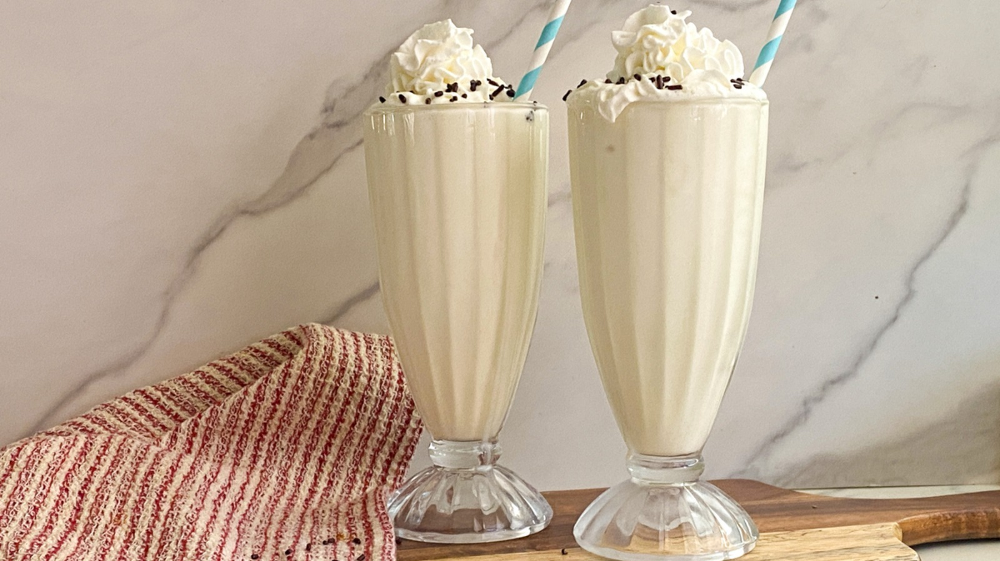

MilkShake

Description
Simple vanilla milkshake!
Ingredients
- 4 cups vanilla ice cream
- 1 cup milk
- 1 teaspoon vanilla
- 3 tablespoons whipped cream
- 1 tablespoon chocolate sprinkles
Steps
- Add the ice cream, milk, and vanilla to a blender, and blend on high for 1 minute.
- Add the whipped cream and chocolate sprinkles on top. Serve immediately